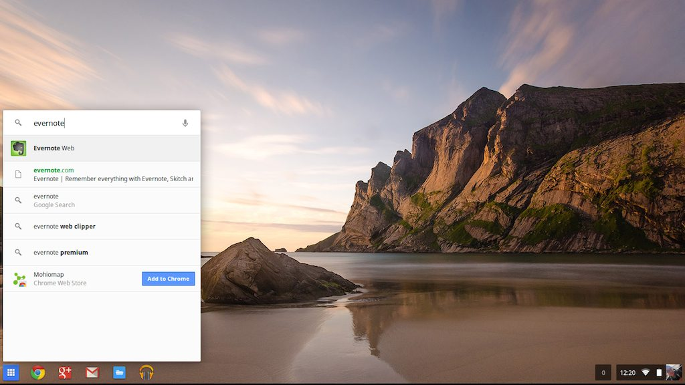
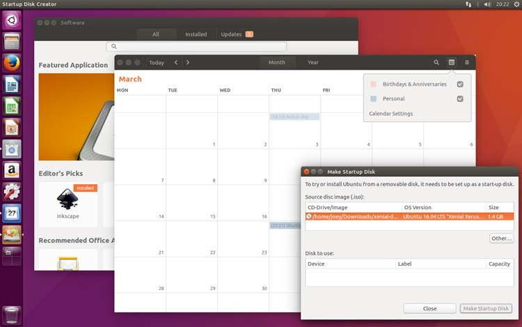
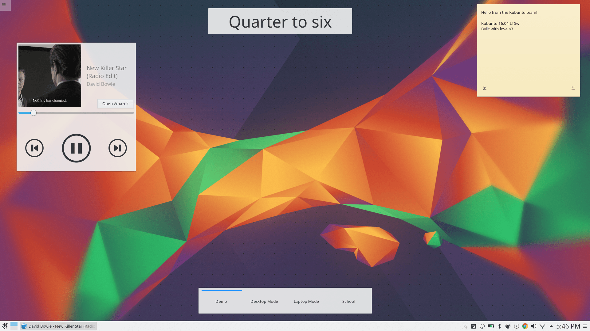
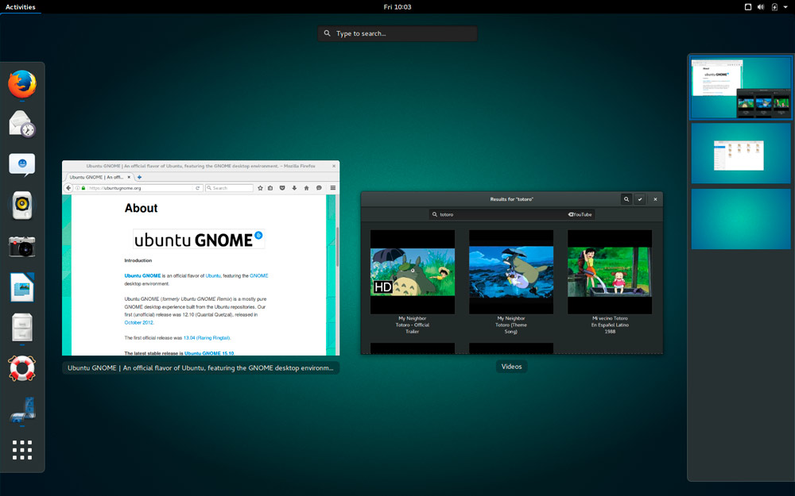

Which operating system should I choose ?
The bottom line of any personal or enterprise software stack is it's operating system.
The most common ones are Windows, MacOS, ChromeOS and Linux distributions.
If all your infrastructure relies on Microsoft products for example, there is no doubt you should choose Windows as an operating system for your company.
But if you are ready to embrace the cloud, then you should consider ChromeOS or a Linux distribution as they offer a great flexibility at a much lower cost of ownership.

ChromeOS
If your users need a easy-to-use, collaboration and cloud focused computer, then go buy a Chromebook.
If you are using Office365, GSuite or Collabora Online as a primary productivity suite, it will be more than enough to enable your users to do their everyday jobs.
If you need more tools you can select from many Android applications through the Play Store and the management console makes it easy to deploy and control your fleet of devices.
In conclusion: if you need a perfect laptop for non-technical users working mostly within their web browser and built to be maintenance free, the Chromebook should be your first choice.
If you need more powerful tools you can use in all types of situations then consider buying computers with a Linux distribution on top.
Linux is usually used as a generic name for a lot of distributions that run the Linux kernel (the core of the operating system). Here we will talk about Linux distributions, the equivalent to Windows or MacOS.
There are a lot of distribution available, some backed by commercial entities (Fedora, openSUSE, Ubuntu) and some developed only by an online community (Debian, Gentoo, Arch Linux).
You can find a great timeline infographics about the Linux distributions at this link .
{kind=link}
The great thing about Linux distributions, is the choice that is offered, the underlying technology - they are not all compatible and offer different tools - as well as the desktop environments we can use.
If we focus on Ubuntu, one of the most popular Linux distribution, you can choose how your desktop should look: more like Windows ? more like MacOS ? or just different ?
Here are some examples of different options you can choose from:

The classic Ubuntu distribution with the Unity Desktop

An Ubuntu distribution with the KDE desktop called Kubuntu

An Ubuntu distribution with the Gnome desktop
So, it means that you or your users can have any of the above desktop environment, but still have the same, compatible operating system than the rest of the company.
Of course, a best practice is to choose one environment for everyone in order to facilitate change management and knowledge transfers, but it is always an option worth considering.
How to choose the right distribution ?
In order to choose the right distribution, you should first take a look at your existing IT assets.
If your fleet of computers is relatively old and you don't have the budget to change it, the latest version of a Linux distribution with a light-weight desktop environment (XFCE/MATE/...) will allow you to secure it completely and give it a second life.
If you are ready to invest a little in a new hardware fleet, you can think about buying different types of hardware based on the business needs of each of your collaborators.
For some people, a cloud-oriented, low-cost but yet powerful Chromebook may be the perfect choice. For some departments, a Linux distribution allowing a similar use to Windows or Mac may be more appropriate.
You can even choose a very user-friendly desktop environment looking like MacOS (Pantheon) or Windows (Cinnamon).
A good review of your business processes should help you list the type of software you need in order to determine which distribution is the best fit.
Is it enterprise ready ?
The main question people ask when talking about Linux and Open-source or free software is about its security.
First, let's look at it the other way around: can a PC, running Windows XP and actively connected to the Internet, be safe anymore ? Especially since Microsoft is not providing any support or anti-virus signatures for it.
We can ask the same question for Windows 7 for which the standard support has ended in January 2015.
With the expansion of malware, ransomware in particular , it is crucial to a have a well up-to-date and secure IT infrastructure and devices fleet.
Available Linux distributions may not have all the same level of security, but the limited default user privileges, the tougher program permission, the powerful auditing system and the fact that it is open-source and can therefore count on a community of thousands of developer to patch any security breach does make it safe.
Its wide adoption on a large percentage of servers around the world can be considered as a proof of trust by the major actors in the sector.
Will I be able to use any software I want ?
Let's make it simple: if you really need to use Photoshop, Microsoft Office desktop version, or some other non-compatible software, you should not think about switching to Linux.
But except for a few people who need very specific software, for the others you can consider a Linux/Chromebook computer running Chrome or Firefox and doing as much as possible in the cloud.
As an Office suite, you can use either Office365, GSuite or Open365. And if you need a desktop version for more powerful calculation, you can install LibreOffice.
For the other software, there is an open-source alternative to quite anything that exists if a cloud version isn't available.
In any case, a cloud-oriented setup for your company's devices will allow you to centralize the information, manage your users and keep you intellectual property under control. And a Linux based fleet will allow you to do just that at a much lower cost of ownership than any other operating system.
It is afterwards only an arbitrage to be made between the cost of SaaS subscriptions for a service versus the switch to a free and open-source software, including the underlying change management cost.
Don't hesitate to contact if you need an analysis or advices on this topic.